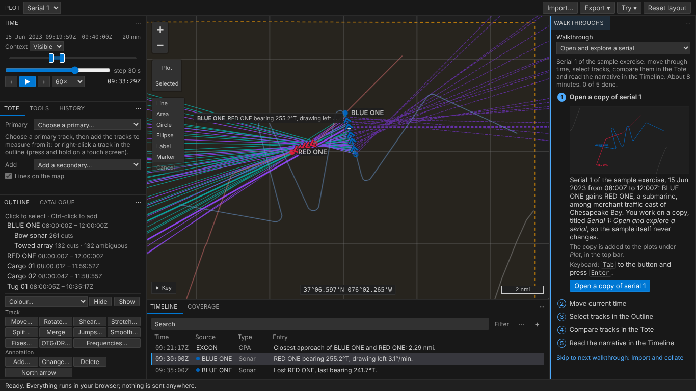
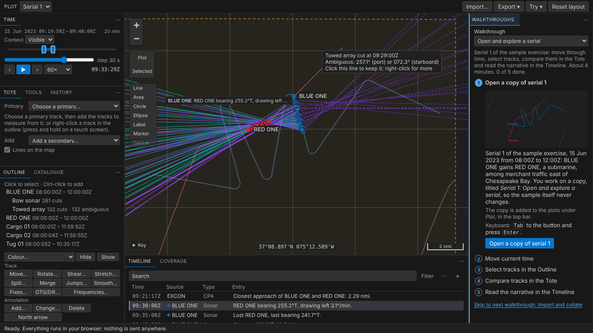
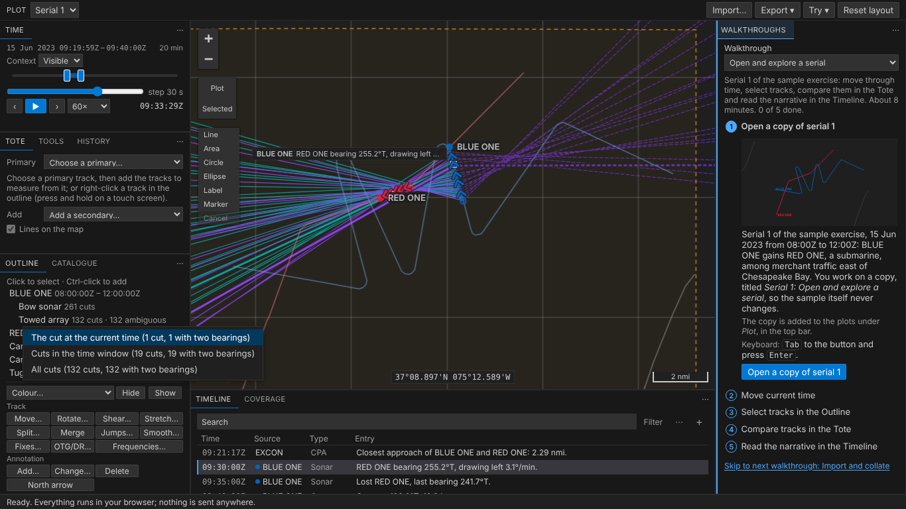
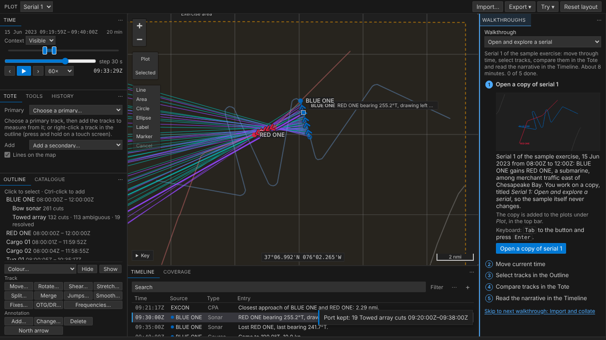
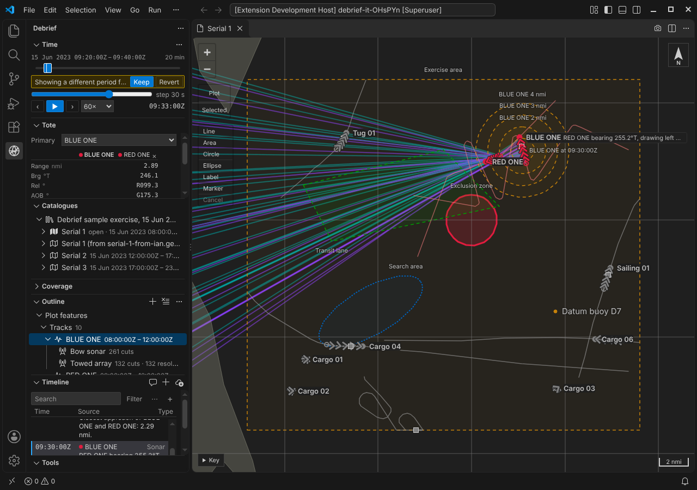

Sensor bearings¶
Bearings are where TMA starts. Legacy Debrief drew a platform's sensor cuts as lines from its track, and let you say which side of a towed array a contact was on. Debrief now does the same: bearings come in from REP and DSF files, legacy plots and a Rider's narrative, are drawn from the track at their time, only in the time window, and a towed array's ambiguous pairs are resolved one cut at a time or a period at once, each an undoable step.
The pictures come from the playground, which runs in a browser, and from VS Code's own test. The tracks and bearings are the sample exercise's, made up as the exercise is.
Cuts in the window, from the track¶
The sample's BLUE ONE now carries two sensors: a bow sonar (teal) and a towed array (purple). Each shows in the Outline under its track, saying how many cuts it has and how many are still ambiguous. With a twenty-minute window, the map draws only that window's cuts, each from where BLUE ONE was when it was taken. The bow sonar's point at RED ONE. The towed array's come in pairs: the array can't tell left from right, so each cut is two bearings mirrored about BLUE ONE's course, the one to port solid and the one to starboard darker and dashed. The cut current time is at is wider, with a dot where it was taken from.

Point at a line and it says what it is: the sensor and time, both bearings and the side each is on.

Keep a side¶
One cut: click the line you believe and the other goes, one step: Port bearing kept on Towed array cut at 09:21:00Z. Right-click (or press and hold on a touch screen) for the cut's menu: keep either bearing, make it ambiguous again, or select it.
A period: the usual case after a turn, when the true bearings held steady and their mirrors swung. A sensor's menu in the Outline (right-click, or Shift+F10), or, with the sensor selected, Port… and Starboard… under Sensor: choose the side, then which cuts, the one at current time, those in the time window, those you've selected, or all of them, each saying how many it holds.

Port is kept for each cut by the side of BLUE ONE's course at that cut's time, so cuts either side of a turn come out right. One step for all nineteen, named so the History says what was done: Port kept: 19 Towed array cuts 09:20:00Z–09:38:00Z. Its record holds the side, the sensor and the period asked for. Undo takes it back; Both again… (Make ambiguous again) is a step of its own, for when you change your mind later.

Where the bearings come from¶
The product owner asked for every source legacy Debrief read, ported with its tests and its quirks:
- REP
;SENSOR:,;SENSOR2:and;SENSOR3:lines: a bearing and range; a bearing and its ambiguous twin; a bearing with its accuracy.NULLandNaNare no value, as legacy read them, and a line with no bearing gives no cut and is counted. - DSF files, REP files of sensor lines alone, read into the open plot: Read sensor data into this plot (DSF, REP)… on the Outline's menu, or Sensor data into the open plot under Import… in the playground. A sensor's track is the plot's track of its name, or the first starting with the same six letters, as legacy matched it; otherwise you're asked which track carries it, as legacy asked.
- Legacy plots (.dpf): each track's sensors and their contacts, no longer listed as not imported. Older legacy Debrief wrote an ambiguous bearing of
0.000on cuts that never had one; those come in as plain bearings, and cuts legacy resolved come in resolved. - A Rider's narrative (Word): a Rider entry's bearing, and its ambiguous twin, becomes a cut of the sensor Rider bearings on the platform's track, as legacy made it.
Frequency isn't imported: acoustic analysis stays in the acoustic replay application, and the import says how many cuts gave one.
Lines, not wedges¶
We were asked to draw a bearing with its error as a wedge, where the data gives an error. We checked every format: ;SENSOR: and ;SENSOR2: carry none; ;SENSOR3: carries a "bearing accuracy" that legacy Debrief read and threw away, that legacy's samples leave NULL, and whose meaning no format or code states; legacy plots carry none. So, by the product owner's decision, bearings are lines. A wedge waits for an error field agreed with the acoustic replay application's owners; the model can take one later without changing anything you see.
Thousands of cuts, smoothly¶
A towed array reporting every few seconds over a long deployment gives tens of thousands of cuts. Only those in the time window are drawn, painted as one picture rather than thousands of lines, each worked out once along the geodesic and cut into only as many pieces as the screen needs. The current cuts have a picture of their own, so playing time redraws one line per sensor. Measured: legacy Debrief's own large sample, 200,000 fixes with 611 cuts, draws in 46 ms and redraws in under 2; 10,000 cuts in the window redraw in about 13 ms, within a frame; moving current time takes a tenth of a millisecond however many there are.
In VS Code¶
The same, in VS Code's own way: sensors under their track in the Outline, Ambiguous bearings: keep port or starboard… and Cut at current time… on a sensor's menu, and quick picks for the side and the cuts.

For agents¶
debrief/sensors lists a plot's sensors, and with cuts: true each cut in a period with its time, bearings, which was kept, the side and where it's drawn from: what a TMA solution will be rooted in. debrief/resolve_ambiguity keeps a side for cuts named, or for a sensor's cuts in a period, as one step. debrief/import_sensor reads a file's sensor lines in, naming the track for any the plot hasn't.
Try it¶
Set a short window in Time, then click one of the towed array's dashed lines, or select the Towed array in the Outline and use Port… under Sensor:
Not yet¶
- Wedges, until an error field is agreed.
- Proposing the sides for you: a tool that reads ownship's turns and proposes each cut's side, for you to confirm, is a recorded future requirement.
- Array offsets: cuts are drawn from the track's position, not from the array trailing behind it.
- TMA itself, next: a solution rooted in the window's cuts, dragged with its bearing residuals live.